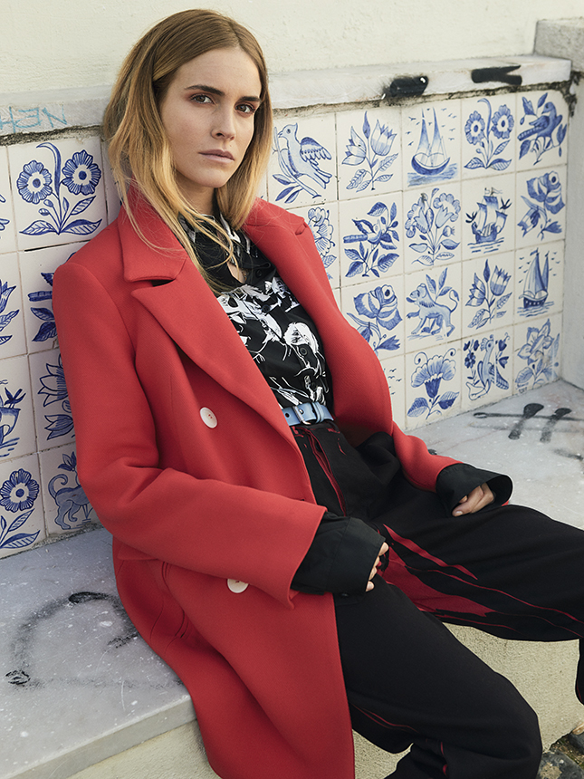
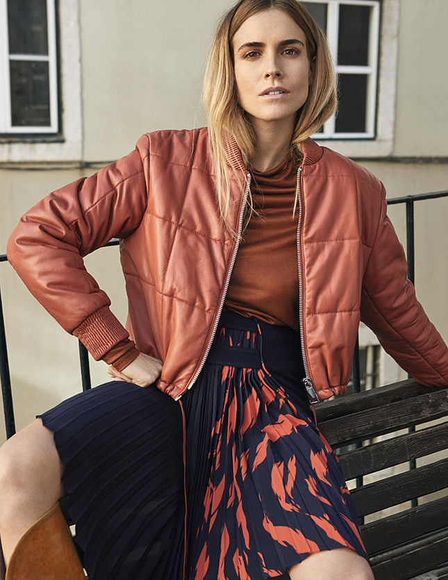
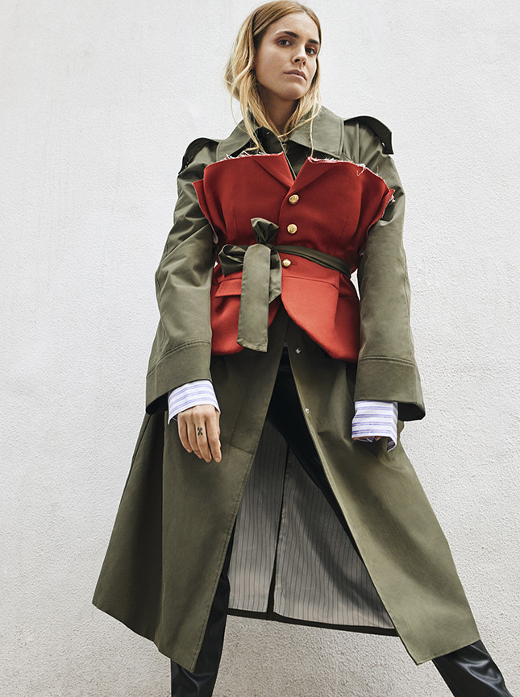
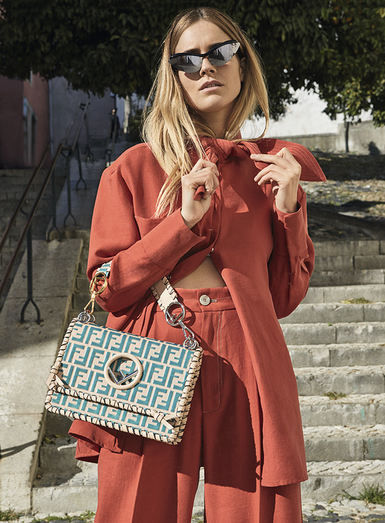
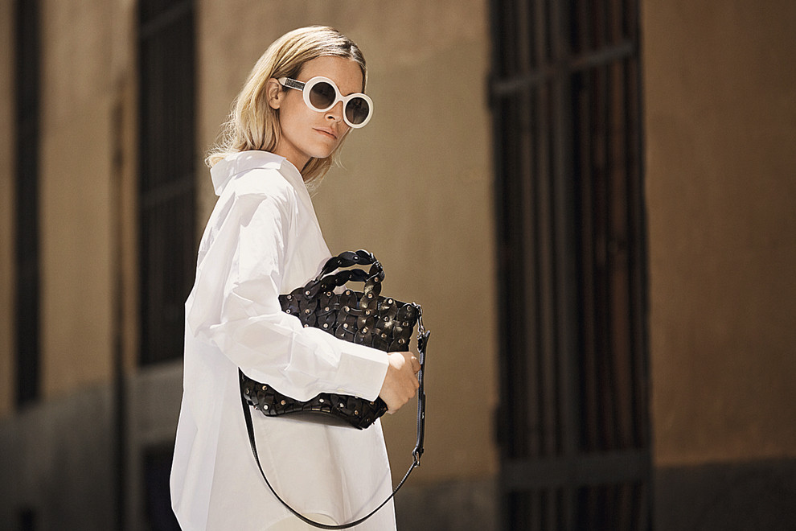

Самая модная девушка в красном — Бланка Миро
Любимица уличных фотографов и стилист — о моде, родной Барселоне и главных цветах весны

На Пиренеях Бланку знают все, кто хоть как-то следит за модой.
Испанки, которые в массе своей предпочитают расслабленный стиль и демократичные марки,
считают Бланку с ее фанатичной преданностью моде и ярким стилем существом высшего порядка.
Она носит безразмерные футболки Harley-Davidson и ковбойские сапоги с винтажными твидовыми
жакетами Chanel, а сверху наматывает полосатый шарф с помпонами. Спортивные штаны adidas с
лампасами надевает с классическим тренчем Max Mara и красными лаковыми ботфортами. А на открытие
бутика Mango в Лиссабоне, где мы встречаемся, Бланка пришла в синих брюках-бананах и плаще,
клетчатой рубашке и туфлях-бабушах оттенка фуксии.

«Мода — это же так увлекательно, — говорит Бланка. — Не представляю,
как можно ограничивать себя одним-двумя цветами, когда существует такая богатая палитра
красок. Мой девиз: чем ярче, тем лучше». Такой взгляд — семейное наследство: мама Бланки —
художник и дизайнер интерьеров, а папа, совладелец салонов Porsche и фотограф-любитель, в
свое время собрал внушительную домашнюю библиотеку с альбомами репродукций Пабло Пикассо и
Хуана Гриса. Привитая родителями тяга к прекрасному привела Бланку в Лондонский университет
искусств, на курсы модной журналистики.

«В Лондоне у меня окончательно пропал страх перед экспериментами.
Там невозможно одеться «не так», потому что никакой нормы не существует. И люди все
открытые, креативные, их сложно чем-либо удивить». Тогда же девушка завела инстаграм,
куда выкладывала свои работы. Сейчас у Бланки сто семьдесят тысяч подписчиков и контракты
с Mango, Chanel, Miu Miu и Loewe, она частый гость на Неделях моды в Милане и Париже, но
больше всего любит родную Барселону, где недавно окончила магистратуру по специальности
«бренд-менеджмент».

«Здесь мне нравится все: погода, климат, кухня. Моя семья и бойфренд
тоже живут здесь». Кроме того, Бланка — колумнист испанского Vogue: дает читательницам
модные подсказки. А что она посоветует русским девушкам? «Сосредоточьтесь на аксессуарах.
Еще в Лондоне я уяснила, что их надо искать не только в бутиках, но и, к примеру, в винтажных
лавках. Вещь с сумасшедшинкой — очки-«кошачий глаз», огромная шляпа или берет с вуалью, сумка
архитектурной формы — гарантия, что вас запомнят. Ну и держите на карандаше молодые марки.
Например, у американского бренда Boyy есть недорогие туфли и сапоги с заклепками и перфорацией,
у британской Danse Lente — сумки в виде ведерок и папок».

©Все права защищены.